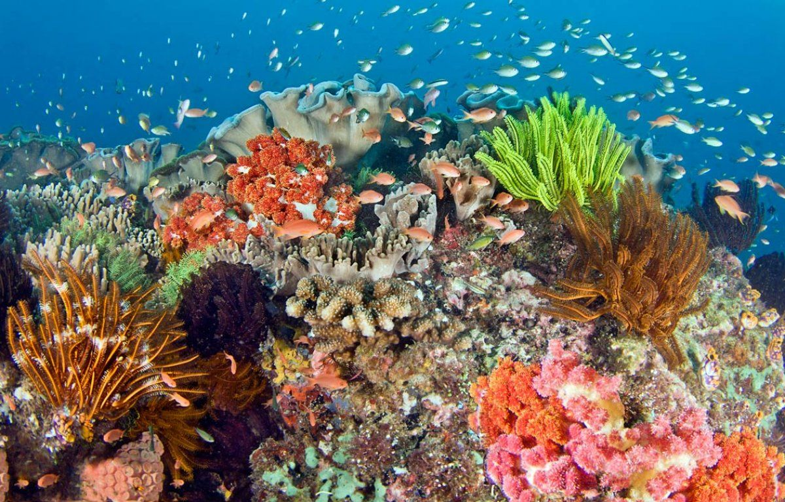
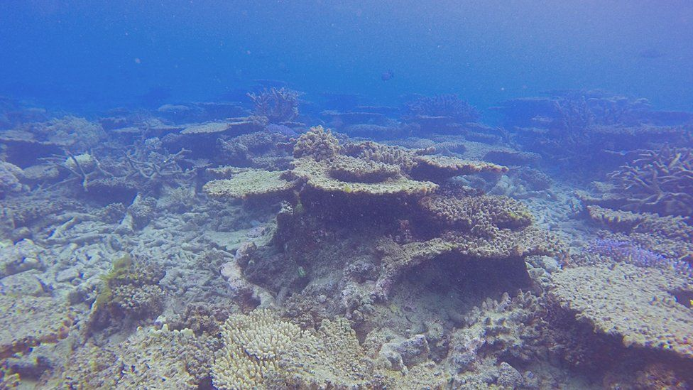

The goal is to simulate the motion of a flock of fish in a beautify ocean. We will use the Boids algorithm to simulate the motion.
I watch documentaries about the ocean and realize how beautiful it is, especially in the coral reef with different flocks of fish swimming gently in the ocean. Not everyone can go scuba diving whenever they want, but we can bring (virtual) ocean to you to enjoy. Moreover, according to the article byt BBC, "Great Barrier Reef has lost half of its corals since 1995," with climate change and its impacts on the coral reef ecosystem, I am afraid that the stunning visual of the coral reef might not last. So if our project can remind people of what they are going to lose and start to care about the ocean, that would count as an ultimate success for us.
|

|

|
To stimulate this emotion in people, the simulation needs to be believable, realistic, and beautiful, not only in term of graphic but also behavior. This will prove to be challenging to implement boids algorithm to get similar behavior as a real flock of fish that avoid obstacles and interact with other bigger fish. There also challenges in making realistic underwater environment that we must solve to achieve realism.
The goal is to simulate a realistic behavior of a flock of fish under the ocean. They swim around obstacles without colliding with them and interact with other fish.
To achieve this, we plan to deliver underwater environments with different obstacles arranged for the flock to move around in.
We can compare our simulation with real-world behaviors to measure how well our simulation does. Collision and other unrealistic behaviors can also signify the quality of the simulation. We define good performance as being able to render a real-time simulation of a flock without lags and with high FPS. If we can achieve high FPS, that means our algorithm to determine the behavior of the whole flock runs efficiently.
We plan to deliver a flock of fish swimming smoothly in real-time render. And if our implementation goes well, we might be able to simulate a huge flock of fish that can avoid obstacles and interact with a big fish like a shark!
1st week: create ocean background, make 3d fish objects. given a group of fish with each of them having
different moving direction and speed. Group them to be a flock.
2nd week: make improvements to the flock of fish to make it more realistic to the fish in the real world.
In this moment just assume this ocean only have this one kind of fish, so no other objects will affect them.
3rd week: finish the part of the code about the flock of fish interacting with other objects in the ocean.
4th week: reserved as extra if anything happens.
We will use online resources, such as articles and research papers, related to the Boids algorithm, which is the algorithm defining the behavior of a flock. Also, we will build our project on top of the Unity game engine. Using the Unity game engine will make it easier for us to render and deal with 3D models. Using Unity, we will build the 3D environment for our flock and we will write the necessary code to simulate the motion and behavior of the flock in the scene.